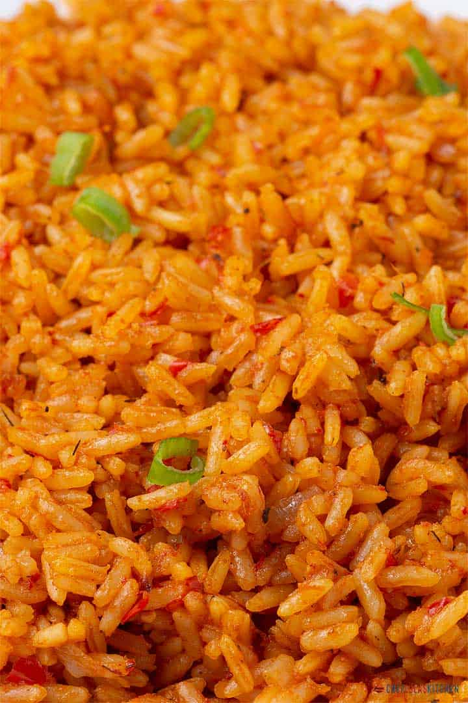
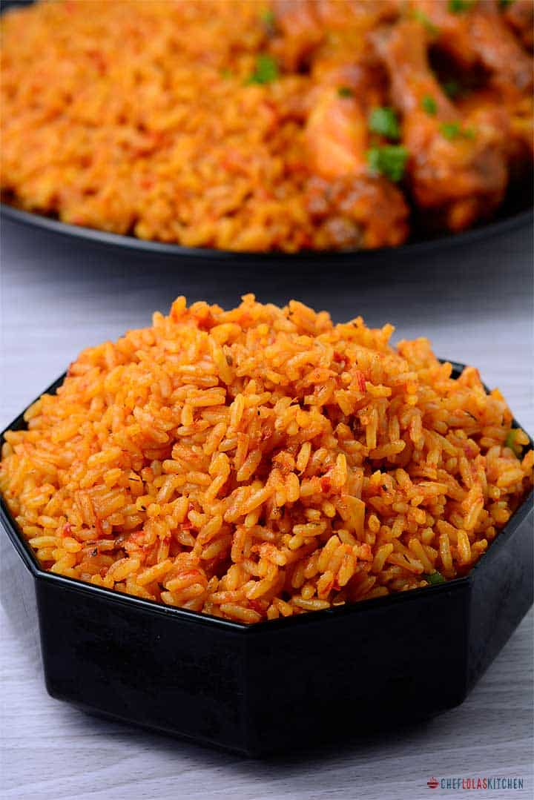
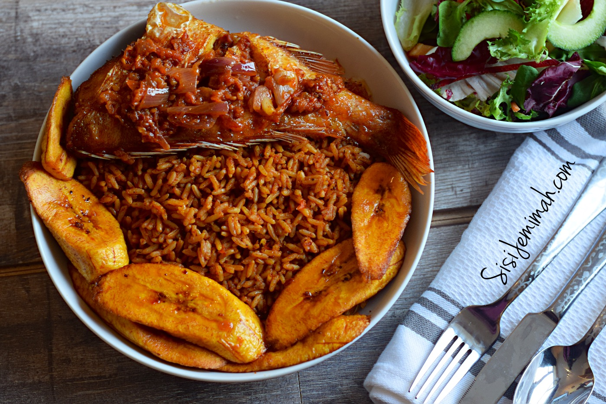

The name of my favorite food is Jollof Rice
Jollof rice is one of the most common dishes in Western Africa, consumed throughout the region including Senegal, Gambia, Nigeria, Sierra Leone, Liberia, Togo, Cameroon, Mali and Ghana. There are several regional variations in name and ingredients, with non-local versions regarded as "inauthentic". The name Jollof rice derives from the name of the Wolof people, though now called theibou dienn or benachin. In French-speaking areas, it is called riz au gras. Despite the variations, the dish is "mutually intelligible" across the region, and has spread along with the diaspora to become the best known African dish outside the continent. The points of origin of the dish are mostly debated among Ghanaians and Nigerians, since both countries claim to be the origin of jollof rice. Jollof rice is typically seen as a culturally sensitive issue between Nigerians and Ghanaians.
| Ingredients | Measurements |
|---|---|
| Groundnut oil | 3/4 cup |
| onion | 1 medium |
| Tomato paste | 5 Tbsp |
| Garlic | 4 cloves |
| Ginger Grated | 1 Tbsp |
| bay leaves | 2 |
| Blended pepper sauce | Blended pepper sauce |
| Thyme | 1 Tbsp |
| Curry Powder | 1 Tbsp |
| Salt | 1 Tsp or add to taste |
| White Pepper or black pepper | Add to taste |
| chicken bouillon powder or cubes | 1 Tbsp chicken bouillon powder or 3 cubes |
| Rice Long grain | 6 Cups |
| chicken/beef stock | 4 Cups |
| tomato sliced | 1 large tomato sliced |
| butter at room temperature optional | 2 tbsp butter at room temperature optional |
| Chicken or beef | As many you want |
| Seasonings | To taste |